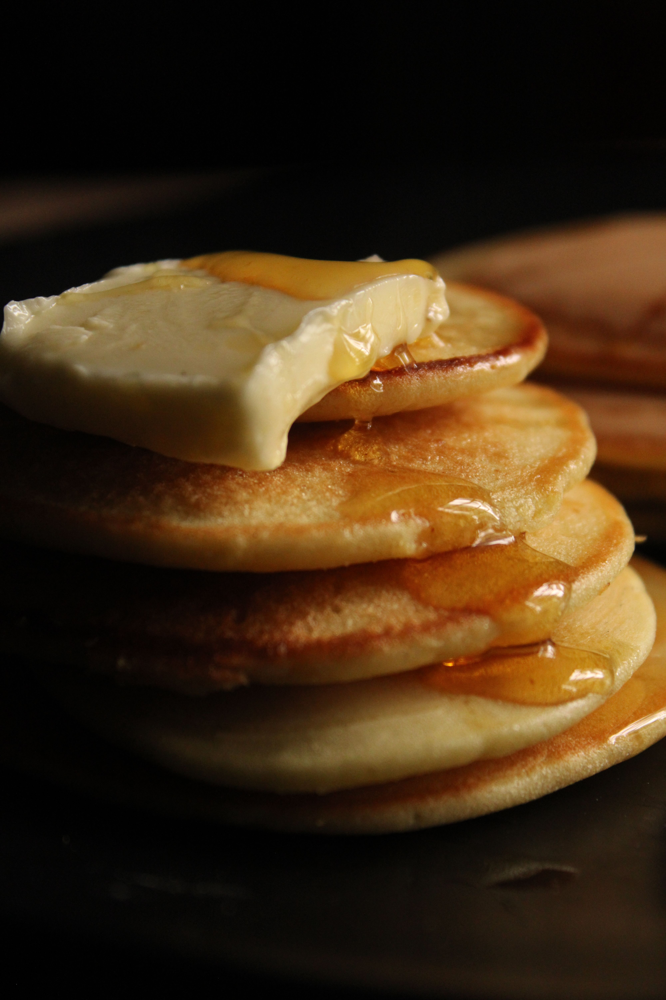

Pancakes
Home

Description
These fluffy golden homemade pancakes are delicious, easy to make and irresistible
Ingredients
- 1 1/2 cups all-purpose flour
- 3 1/2 teaspoons baking powder
- 1 tablespoon white sugar
- 1/4 teaspoon salt
- 1 1/4 cups milk
- 1 egg
- 3 tablespoons melted butter
Steps
- In a large bowl, sift together the flour, baking powder, sugar, and salt.
- Make a well in the center and pour in the milk, egg, and melted butter; mix until smooth.
- Heat a lightly oiled griddle or frying pan over medium-high heat.
- Pour or scoop the batter onto the griddle, using approximately 1/4 cup for each pancake.
- Cook until bubbles form on top and the edges are dry, then flip and cook until brown on the other side.
- Serve hot with butter and maple syrup.